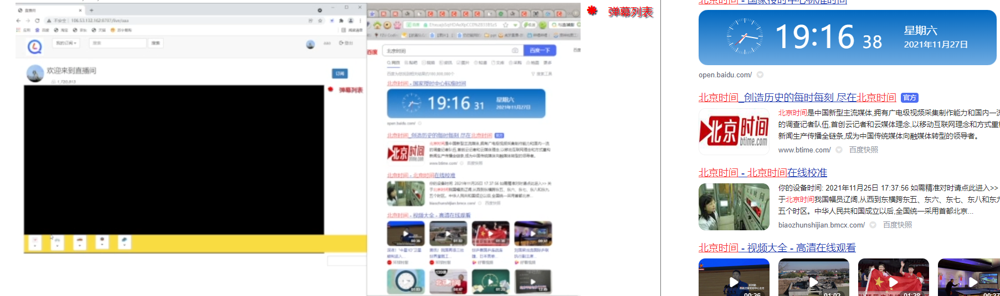

直播协议选择与http-flv Demo 一、概述 面对网络带宽提升，直播成为不少网站、软件的必备功能。而流传输协议的选择将对直播效果产生巨大影响。
二、推流方式 RMTP（Real Time Message Protocol）是目前主流的推流协议，他具有较低的时延，和高稳定性。
三、拉流方式
HLS(Http Living Streaming)
RTMP(Real Time Messaging Protocol)
RTSP(Real-Time Stream Protocol)
HTTP
四、直播Demo实现
这里通过obs+nginx+nginx-rtmp-module实现rtmp推流+http_flv拉流。
同时，依赖nginx-rtmp-module还实现了推流身份验证。
具体安装过程自行百度。
配置文件如下
script 1 2 3 4 5 6 7 8 9 10 11 12 13 14 15 16 17 18 19 20 21 22 23 24 25 26 27 28 # user nobody; worker_processes 1; events { worker_connections 1024; } rtmp_auto_push on; rtmp_auto_push_reconnect 1s; rtmp_socket_dir /tmp; rtmp { out_queue 4096; out_cork 8; max_streams 128; timeout 15s; drop_idle_publisher 15s; log_interval 5s; #interval used by log module to log in access.log, it is very useful for debug log_size 1m; #buffer size used by log module to log in access.log server { listen 1935; server_name localhost; #for suffix wildcard matching of virtual host name application http_flv { live on; on_publish http://xxx.com/auth; # 推拉开始身份验证地址 on_publish_done http://xxx.com/on_publish_done; # 推拉结束回调地址 gop_cache on; #open GOP cache for reducing the wating time for the first picture of video } } }
Nginx配置2（http拉流配置）
script 1 2 3 4 5 6 7 8 9 10 11 12 13 14 15 16 17 18 19 20 21 22 23 24 http { include mime.types; default_type application/octet-stream; sendfile on; keepalive_timeout 65; server { listen 80; server_name localhost; location / { root html; index index.html index.htm; } location /live { flv_live on; #open flv live streaming (subscribe) chunked_transfer_encoding on; #open 'Transfer-Encoding: chunked' response add_header 'Access-Control-Allow-Origin' '*'; #add additional HTTP header add_header 'Access-Control-Allow-Credentials' 'true'; #add additional HTTP header } error_page 500 502 503 504 /50x.html; location = /50x.html { root html; } } }
obs推流地址配置
后端处理
1 2 3 4 5 6 7 8 9 10 11 12 13 14 15 16 17 18 19 20 21 22 @api.route('/auth' , methods=['POST' ] def auth (): data = request.form url = data.get('swfurl' ) pull_key = data.get('name' ) if url and pull_key: lst_query = dict (urllib.parse.parse_qsl(urllib.parse.urlparse(url).query)) push_key = lst_query.get('key' ) if push_key is not None : room = Room.query.filter (Room.push_key == push_key, Room.pull_key == pull_key).first() types = RoomType.query.filter (RoomType.id == room.type_id).first() if room and types: rd.sadd("liver" , set_room_key(room)) rd.sadd(types.mname, set_room_key(room)) return Response(response='success' , status=200 ) return Response(status=500 )
最后前端通过js获取拉流地址
1 2 3 4 5 6 7 8 9 10 11 12 13 14 15 16 17 18 19 20 21 22 23 24 25 26 27 28 29 30 31 32 33 34 35 function LiveUrl ( var params = {}; var roomname = GetRoomName(location.href); var roomurl = null ; $.ajax({ url : RequestUrl+roomname, type : "post" , data : params, async :false , dataType : "json" , }).done(function (ret ) if (!ret['code' ]) { var room_data = ret['data' ]; roomurl = liveUrl+"&stream=" +room_data['url' ]; RoomSet(room_data); } else { alert(ret['msg' ]); } }); return roomurl } function IsLiveRound ( if (!IsLive(GetRoomName(location.href))){ console .log(IsLive(GetRoomName(location.href))); $("#unlive" ).html("主播暂时不在哦" ); } else { $("#unlive" ).html("" ); } }
五、效果展示 